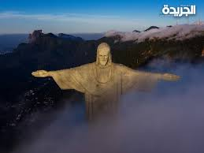
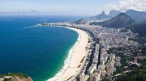
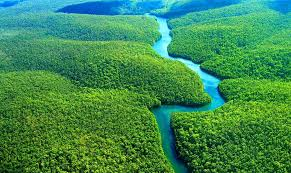
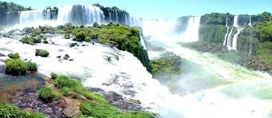

تمثال ضخم في مدينة ريو دي جانيرو ويعد رمزاً للبرازيل.
O Cristo Redentor é um dos símbolos mais famosos do Brasil, localizado
no Rio de Janeiro.

أحد أشهر الشواطئ في العالم ويجذب السياح من كل مكان.
As praias do Rio de Janeiro são famosas em todo o mundo.

أكبر غابة مطيرة في العالم وتضم تنوعاً بيولوجياً هائلاً.
A Floresta Amazônica é a maior floresta tropical do mundo.

مجموعة شلالات ضخمة تقع على حدود البرازيل والأرجنتين.
As Cataratas do Iguaçu são uma das maiores cachoeiras do mundo.